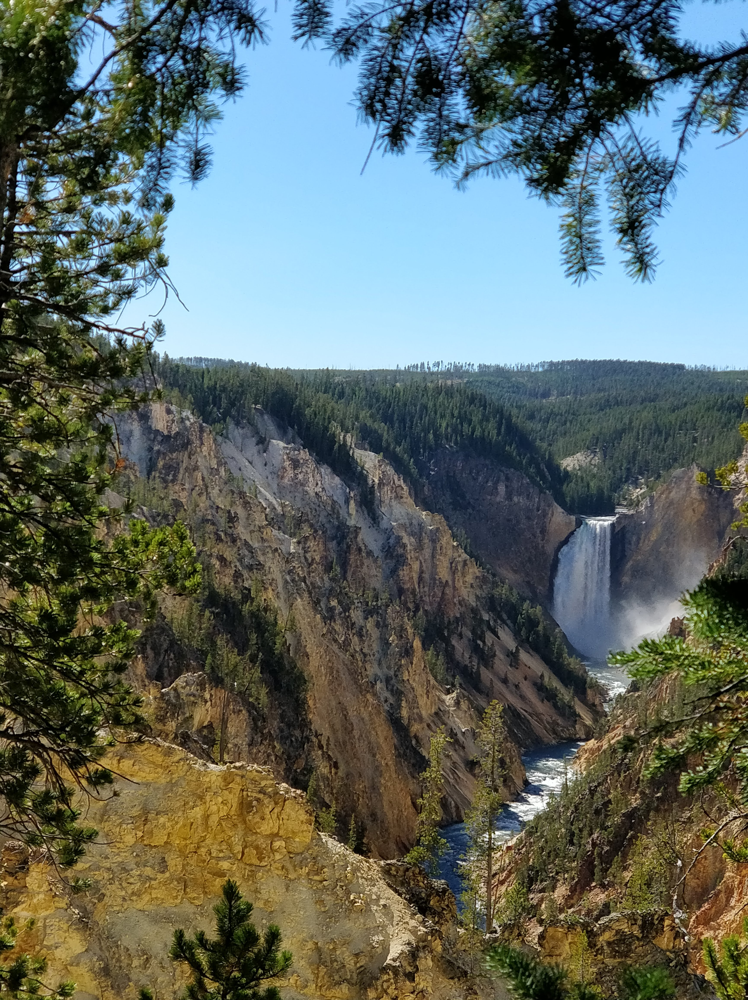
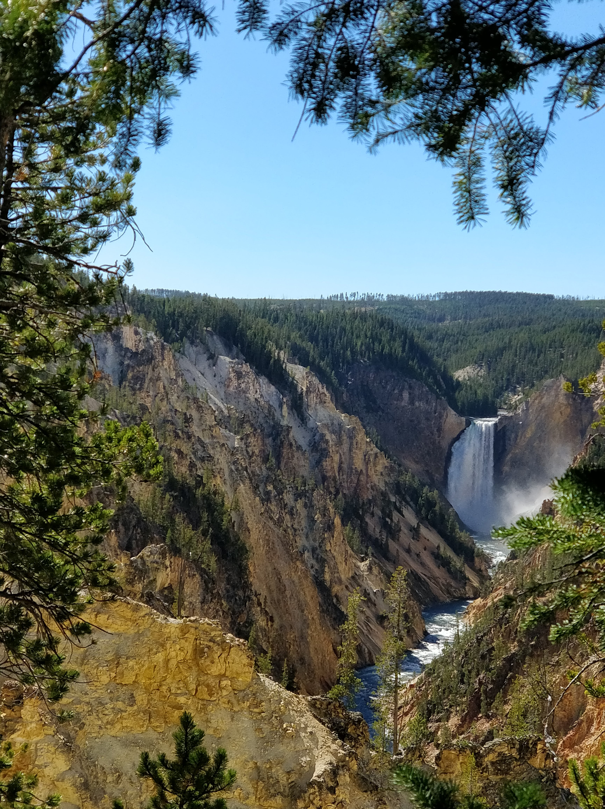

Introduction
From personal experience, I have been to many places within the United States and other countries.
For example, Yellowstone National Park or the Niaagra Falls.
Details
Two years ago, my family drove from Renton, Washington to Yellowstone which took about 13 hours with a few breaks
 
